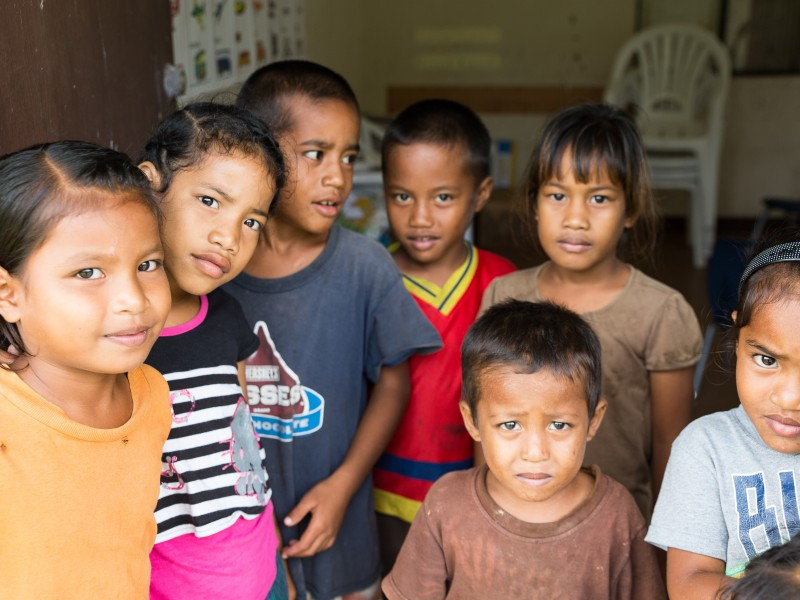

April 9, 2017
#ForeverMarshallIslands

Today’s global perspective post is from Finley’s sister, Callie.
“This school, packed with silly, beautiful kids, has a front row seat to our changing climate. I took these photos last week, following a tip from a local councilman that this school had been particularly vulnerable to severe weather over recent years. It is situated near the lagoon in Matolen, Arno atoll, in the Marshall Islands—a small nation comprising 29 atolls, about 7,000 miles from DC.
Though my original intent was to visit a friend there, I went with the added purpose of documenting climate change and its effects on children. Before this trip, I thought of climate change in the abstract—a bit like a baby learning to crawl; you know it’s going to wreak havoc once it inevitably starts walking and running around, but at the moment it’s only meddling. That’s not the case for the people of the Marshall Islands, who have been experiencing the effects of climate change like it’s in its terrible twos. Sea level rise and more frequent inundations have altered the coastline, ruined crops, and forced people out of their homes. The stress of an uncertain future wears on the minds of people whose ancestors have lived here for over 2,000 years. The councilman who suggested I visit this school believes his island will be underwater in 50 years.
Others remain optimistic that the global community will not stand by and allow the cultural genocide of an entire nation that would occur should sea level rise make these islands uninhabitable. Right now, the world is aiming for 2 degrees of global warming, which puts these incredible islands and their 60,000 citizens at enormous risk of losing everything…within the lifetimes of the children in this school.
My call to action for you is simply to share this story. Most people don’t know where the Marshall Islands are, or even that they exist. Go find them on google maps, read a little about them, and talk about them with everyone you run into. The more people know about them, the more people will do to combat climate change, and to preserve a future for these kids in their own country.”
{kind=link}
{kind=link}